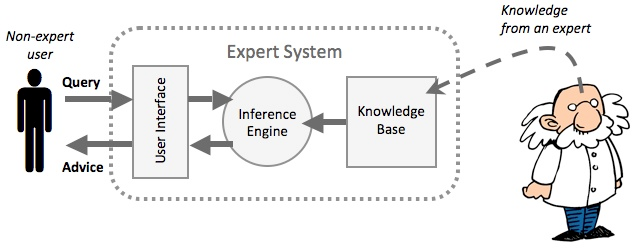
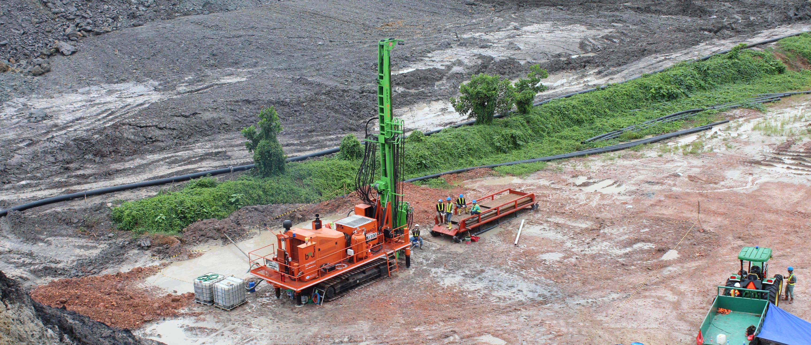
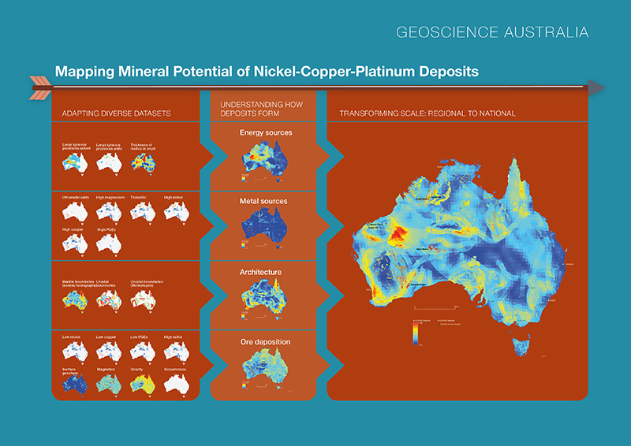

Hai! Selamat datang di website saya. To be honest, ini merupakan website pertama saya yang bukan merupakan blog. Thanks to github! Jadi, sebenarnya tujuan utama saya buat website ini adalah dalam rangka memenuhi tugas lab yang diberikan oleh kakak-kakak lab GAIB kepada Ca-GAIB 2017. Karena ini merupakan website yang pertama kali saya buat, maklum ya teman-teman kontennya hanya sedikit dan design-nya masih kelihatan pemula banget.
Sebenarnya saya dari dulu tidak begitu tertarik dengan web design. Tapi, setelah membuat website ini, dipikir-pikir seru juga yah bikin website itu, meski ribet karena harus memikirkan dari segi design dan code-nya sekaligus. Segitu aja deh intermezzo-nya. Selamat menjelajah!
Selamat datang di laman ini. Di sini saya akan berbagi cerita sedikit mengenai diri saya. Saya dilahirkan dengan nama Rachel Sidney Devianti di Jakarta pada tanggal 18 Desember 1997. Namun, saat ini saya menghabiskan sebagian besar waktu saya untuk berkuliah di Bandung. Jurusan yang saya ambil adalah Teknik Informatika dan pada saat ini saya akan memasuki semester ke-5.
Jangan kalian pikir karena saya mengambil jurusan Teknik Informatika lalu saya hobi coding yah. Coding itu hanyalah hal yang saya sukai, namun hobi saya yang sesungguhnya adalah naik sepeda dan nonton. Di sela-sela kesibukan saya, saya selalu menyempatkan diri untuk menonton, entah itu nonton bioskop, nonton Youtube, ataupun nonton online. Karena bagi saya, ketika kita terlalu sibuk, kita cenderung akan menjadi stress. Oleh sebab itu, kita butuh refreshing untuk menjernihkan otak kita, salah satunya adalah dengan melakukan hal yang kita sukai.
Motto hidup yang saya pegang teguh sekarang ini adalah "Love your neighbor as yourself". Bagi saya, yang terpenting di dalam hidup ini adalah dimana kita dapat menyayangi sesama kita seperti kita menyayangi diri kita sendiri. Hal ini sebenarnya sangat sulit untuk dilakukan mengingat sifat dasar kita adalah cenderung menyayangi diri kita sendiri dan tidak memperdulikan orang lain. Namun, seiring berjalannya waktu saya makin belajar untuk memaknai motto hidup saya ini. Sekian info-info yang dapat saya bagikan mengenai diri saya. Senang berbagi dengan kamu!
In artificial intelligence, an expert system is a computer system that emulates the decision-making ability of a human expert. Expert systems are designed to solve complex problems by reasoning about knowledge, represented mainly as if–then rules rather than through conventional procedural code. The first expert systems were created in the 1970s and then proliferated in the 1980s. Expert systems were among the first truly successful forms of artificial intelligence (AI) software. An expert system is divided into two subsystems: the inference engine and the knowledge base. The knowledge base represents facts and rules. The inference engine applies the rules to the known facts to deduce new facts. Inference engines can also include explanation and debugging abilities.
An expert system is made up of three parts:

The non-expert user queries the expert system. This is done by asking a question, or by answering questions asked by the expert system. The inference engine uses the query to search the knowledge base and then provides an answer or some advice to the user.
There is so many applications of expert system in life, one of them is in geology. Expert system can be used to conduct mineral exploration. It is called Prospector. Prospector is an expert system designed for decision-making problems in mineral exploration. It aids geologists in evaluating the favorability of an exploration site or region for occurrences of ore deposits of particular types. Once a site has been identified, Prospector can also be used for drilling-site selection.
In addition, Geologists had remarked about its potential value as an educational tool. In this regard, the models in the system contain explicit, detailed information from the literature and the experience of expert explorationists, together with explanatory text that can be obtained upon request.

In the interactive consultation mode of operation, the system is first in the Antecedent mode. A typical consultation session begins with the user volunteering information in the form of simple assertions. A typical consequence of initial volunteering is that a few exact and a number of partial matches are made between volunteered evidence and the nodes in the inference network, and some changes occur in the probabilities of the toplevel hypotheses. Second, once a top-level hypothesis H has been chosen, the program enters the consequent mode. Here it searches the inference network below H to determine what question to ask the user to help resolve the issue. In the batch processing mode, Prospector can automatically generate questionnaires for any inference network. When the data entered in the questionnaire are later transferred to a file, the program can read the answer from the file as if it were in normal interactive mode. When Prospector is used for the drilling site selection, it would also request map data. The user enters it by using a digitizing tablet with a contour editing and display program.
Prospector can reach a conclusion about a particular ore deposit. It gives a certainty value of the ore deposit. It as well provides the explanation text for the conclusion. Like Mycin, it allows the user to execute commands as well as to answer questions. For example, in response to a WHY command, the program accessed some explanatory text that the expert has previously prepared to explain why a particular piece of evidence is important. Other commands allow the user to do such things as trace internal inferences, change previous answers, change top-level goals, and obtain summaries of conclusions reached up to that point. When Prospector is used for the drilling site selection, it could also produce the favorability map of the site.

The data in Prospector is matched against existing models. Most of Prospector’s questions expect Yes/No or certainty answers, although some questions ask for quantities; in the latter case, the likelihood ratio for the rule is a function of that quantity. In some cases, the Prospector may request the user to input the digitizing map data for a drilling site.
Prospector has 3 modes of operations: Interactive consultation; Batch processing; Compiled execution. For the Interactive consultation mode, there are 2 phases: 1.The antecedent mode. 2.The consequent mode. A typical consultation session begins with the user volunteering information in the form of simple assertions. A typical consequence of initial volunteering is that a few exact and a number of partial matches are made between volunteered evidence and the nodes in the inference network, and some changes occur in the probabilities of the top-level hypotheses. Second, once a top-level hypothesis H has been chosen, the program enters the consequent mode. It searches the inference network below H to determine what question to ask the user to help resolve the issue.
In the antecedent mode of an interactive consultation, the program is receiving information; it matches statements from the user against the assertions in the inference network and propagates probability changes up through the network. In the consequent mode, the program is attempting to establish (or rule out) a top-level hypothesis, and it searches the inference network for evidence nodes that are most effective for this task. The strategy that the program uses to choose goals and select evidence is called control strategy.
A typical consequence of initial volunteering is that a few exact and a number of partial matches are made between volunteered evidence and the nodes in the inference network, and some changes occur in the probabilities of the top-level hypotheses. At this point Prospector turns to the problem of working interactively with the user to choose a top-level hypothesis for further refinement. For each top-level hypothesis, a score is computed that combines the certainty of that hypotheses and an average “effective” certainty of related nodes that were partially matched by volunteered evidence. The top-scoring hypotheses are revealed to the user, who is then given the choice of either following the program’s recommendation or selecting a different hypothesis to pursuer. In either case, the system has a goal hypothesis to work on.
Once a top-level hypothesis H has been chosen, the program enters the consequent mode. Here it searches the inference network below H to determine what question to ask the user to help resolve the issue. In doing so, Prospector attempts to satisfy the following criteria:
Prospector system uses models and semantic networks to represents knowledge. Semantic Network is a network of nodes linked together by directed arcs to represent relevant knowledge like taxonomic relations among objects in the domain. Model is a body of knowledge about a particular domain of expertise encoded into the system, which the system can act.
The program begins by allowing the user to enter information about the significant types of rocks and minerals that have been observed or suspected to be present. This antecedent mode helps in the selection of models to pursue, which are scored and initially ranked. Once the user selects a particular model, the program enters into the consequent mode and begins asking a series of questions. Most of Prospector’s questions expect Yes/No or certainty answers, although some questions ask for quantities; in the latter case, the likelihood ratio for the rule is a function of that quantity.
The inference network can be used in any of the three operating modes of Prospector (Interactive, batch, compiled). For the application to prospect evaluation, the interactive mode is natural. We can imagine the typical user to be an exploration geologist who has just spend several days making a surface examination of a prospect, who has found evidence that sparks his or her interest, and who would like to receive advice from a specialist in evaluating the degree to which the prospect matches a classical model.
The program begins by allowing the user to enter information about the significant types of rocks and minerals that have been observed or suspected to be present. This antecedent mode helps in the selection of models to pursue, which are scored and initially ranked. Once the user selects a particular model, the program enters into the consequent mode and begins asking a series of questions. In some cases, the Prospector may request the user to input the digitizing map data for a drilling site.
Strengths of Prospector are:
Weakness of Prospector is: